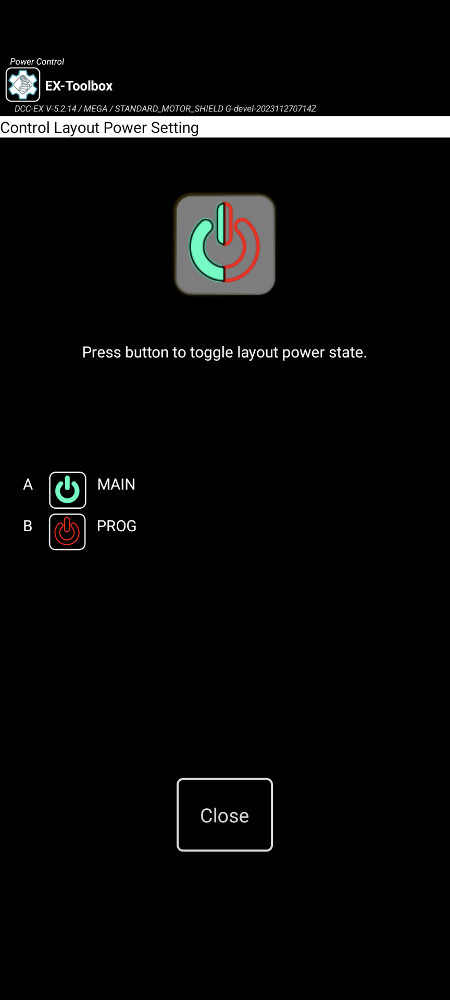

EX-Toolbox - Installing and Using

Installing
EX‑Toolbox can be installed on you phone or table via the Google Play Store .
Open the Play Store app on your phone or tablet and search for “EX-Toolbox”.
Once installed, open EX‑Toolbox and it will go through the initial setup wizard where it will ask for one permission, and for which which theme you would like to use.
After you complete the setup wizard, you will be shown the ‘Connection’ Screen
Connecting

Other than the very first time you start EX‑Toolbox, when the app opens you will be shown the ‘Connection’ screen.
On the ‘Connection’ screen there are three ways you can select a EX‑CommandStation to connect to:
IP Address and Port
Discovered Servers
Recent servers
Discovered Servers
This is the most common way to connect. If the server you want to connect to is in the list, simply click on it and you will be taken to the ‘CV-Programming’ screen.
If the server does not appear in the recent list try one of the other two methods. Your server not appearing in the recent list is not necessarily a problem and there can be a number of reasons why.
Recent Server List
If the server you want to connect to is in the list, simply click on it and you will be taken to the ‘CV-Programming’ screen.
A server being in this list does not necessarily mean that you will be able to connect it now. It just means that you have successfully connected to it in the past.
IP Address and Port
Type in the IP address and Port of the EX‑CommandStation and press Connect.
To find your EX-CommandStation’s IP address and Port refer you original setup or, if you have a OLED screen on your command station the details will be displayed on it.
If you only ever connect to one EX‑CommandStation you can effectively bypass this screen by setting the ‘Auto-Connect to WiThrottle Server?’ preference.
CV Programming
{kind=link}
DCC Decoder CV programming is available:
on the Programming track (PROG) - Service Mode
on the main line (MAIN) - Operation mode / Ops Mode
By default EX‑Toolbox shows the Service Mode options. To switch to Operation Mode, select “Program on Main (Operation Mode)” on the drop down list at the top of the screen.
CV Programming (Service Mode)

Service Mode CV Programing is available form the ‘CV Programming’ screen, when ‘Programming Track (ServiceMode)’ is selected in the drop down list at the top of the screen.
Service Mode CV Programming allows you to both Read (if the decoder/loco supports it) and Write CVs.
You do not need to know the DCC Address of the decoder being changed, as all decoders/locos currently on the programming track will have the CV changed at the same time.
On this screen you can:
read the decoder’s DCC Address
write a new DCC Address to the decoder
read a CV value from the decoder
write a CV value to the decoder
select from a list of named, common CVs
issue <> commands to the EX‑CommandStation
To read the DCC Address of the decoder click the Read button on the DCC Address row.
To write a DCC Address to the decoder, enter the address and click the Write button on the DCC Address row.
To read a CV of the decoder, enter the CV number and click the Read button on the CV row.
To write a CV value to the decoder, enter the CV number, enter the value and click the Write button on the CV row.
If you select a ‘common CV value’ it will enter the CV number into the field. From there follow the instructions above for reading or writing the CV.
Note: Issuing a read or write will automatically turn the track power on.
See below for issuing DCC-EX commands.
CV Programming (Operation Mode)

Operation Mode CV Programing is available form the ‘CV Programming’ screen, when ‘Program on Main (Operation Mode)’ is selected in the drop down list at the top of the screen.
Operation Mode CV Programming ONLY allows you to Write CVs.
To use Operation Mode CV Programming you must know the DCC Address of the decoder/loco you want to change. Note: you should never try to change the DCC Address of the decoder/loco using Operation Mode CV Programming.
On this screen you can:
write a new DCC Address to the decoder
write a CV value to the decoder
select from a list of named, common CVs
issue <> commands to the EX‑CommandStation
To write a CV value to the decoder, enter the DCC Address of the decoder, enter the CV number, enter the value and click the Write button on the CV row.
If you select a ‘common CV value’ it will enter the CV number into the field. From there follow the instructions above for writing the CV.
Note: Issuing a read or write will automatically turn the track power on.
See below for issuing DCC-EX commands.
Issuing <> Commands to the EX-CommandStation
On several of the screens in EX‑Toolbox you can issue native DCC-EX <> commands to your EX‑CommandStation.
Enter the command you want to send, and click Send.
The command you send, and any responses from the command station will be shown below.
If you select a ‘common command value’ it will enter the command the field. From there follow the instructions above for issuing the command.
You can use the Next and Prior buttons to retrieve previously issues commands.
Track Manager
(Only available when connected to EX-CommandStation version 4.2.7 and above.)

To access the Track Manager either:
Swipe Right from the CV-Programming Screen
Swipe Left from the Current Status Screen
Select ‘Track Manager’ from the Menu
Track Manager allow you to change up to 8 channels (depending on the Motor Shield you are using)
Each channel can be one of:
DCC PROG- Programming TrackDCC MAIN- Main TrackDCDC reversed polarity (DCX)OFF
Select the value you want for the channels and click Set
Note. If you select DC or DCX you must select a DCC address for the channel before pressing Set. What ever address you select, selecting that address on your throttle (e.g. Engine Driver) will result in the DC locomotive on the track connected to that channel to respond.
Note. Only one channel can be PROG. If you select more that one, one will turned OFF.
Servo motor testing and adjustment

THe servo motor test screen will allow you to test and fine tune the settings needed for configuring servo motors attached to the EX‑CommandStation. This is intended to be temporary. To permanently configure a servo motor you will need to record the values and include the in the configuration of your EX‑CommandStation.
To access the Servo configuration screen either:
Swipe Right from the Sensor Screen
Swipe Left from the CV Programming Screen
Select ‘Servos’ from the Menu
On the Servo moto Screen,
# Enter the VPin of the servo motor you want adjustment
# Enter any known starting values for Close, Mid, Throw
# Test the Close, Mid, Throw positions buy pressing the appropriate button. The servo will move to that position.
# Fine adjust any of the three positions by using the + or - buttons
The servo will gradually move.
# when you are happy, record the three values
Sensor testing
The Sensor test screen will allow you to test any sensors configured in your EX‑CommandStation.
To access the Sensor Testing configuration screen either:
Swipe Right from the Current Status Screen
Swipe Left from the CV Servos Screen
Select ‘Sensors’ from the Menu
When the screen opens the first 10 servos found will be shown. Activity on the sensors will be shown on the screen.
The Watch button is generally not needed, but will force EX‑Toolbox to check the available sensors on the EX‑CommandStation again.
Current Meter
(Only available when connected to EX-CommandStation version 4.2.20 and above.)

The Current Status screen will show you the current values for eight channels on the motor shield on your EX‑CommandStation.
To access the Current Meter screen either:
Swipe Right from the Track Manager Screen
Swipe Left from the Sensors Screen
Select ‘Current Status’ from the Menu
For each channel the following is shown:
the up-to-date value in Milliamps
the highest value seen recently in Milliamps
the maximum value able to be supplied by the moto shield in Milliamps
The readings start as soon as you open the screen and are paused as soon as you exit the screen. The readings are taken every three seconds.
You can manually stop the readings with the Stop button.
You can manually restart the readings with the Start button. This will also clear the ‘Highest’ values.
Secondary Screens
Power
{kind=link}

Turning Track Power On
There are two ways to turn the Track Power on/off:
Power Screen - accessed from the menu
Power Action Bar button - needs to be enable in the preferences
The Power Screen can be accessed from the . This will open the Power Screen where there is a simple button that to turn the power on or off. Use the Close button or Android’s Back button to return to the CV-Programming Screen.
If the Power Action Bar button is enabled, simply click on it to turn track power on or off.
Note
You can also optionally enable the Power Button on the Action bar in the preferences.
Preferences
Most configuration options are found in the Preferences which is accessed via the overflow menu which is normally three dots (⁞) or three bars (≡).
View log
Accessed from any of the main screens via .
This screen allows you to view the internal Engine Driver log of events. This is sometimes useful for analysing problems.
The option to Start recording to file creates a user-accessible file that can be sent to the EX‑Toolbox app developers to assist you in resolving a problem.
The file will be located on your mobile phone at:
Internal storage /Android/data/dcc_ex.toolbox/files
and will be named something like: logcat9999999999999.txt
Enable the preference to include the timestamp on each line of the log.
About
This screen displays
Information about EX‑Toolbox
Information about the EX‑CommandStation it is currently connected to (if any)
A page of basic information about EX‑CommandStation